https://docs.ultralytics.com/zh/quickstart/ https://blog.csdn.net/Scoful/article/details/131209347
YOLO发展历史#
1.起源与核心思想的开放性 (Open Source) 开创者：YOLO最初确实是由Joseph Redmon等人作为学术研究项目创建的，并发表了论文。 开源：他们秉承开源精神，将代码公开。这一举动瞬间吸引了全世界的研究者和开发者。这意味着，任何人都可以获取、使用、修改和分发这些代码。
2.创始人的“退出”与社区的“接管” 这是一个非常关键的转折点。 伦理担忧：在YOLOv3之后，创始人Joseph Redmon因担心其技术被用于军事、监控等恶性用途，产生了严重的伦理担忧，并宣布停止继续参与YOLO相关的研究。 权力真空与机遇：核心创始人的离开，并没有让市场和研究对高效目标检测的需求消失。这直接催生了两个结果：
- 官方分支的延续：YOLOv4由原YOLOv3社区的活跃维护者（Alexey Bochkovskiy等）接手开发，延续了“官方”血脉。
- 新玩家的涌入：巨大的需求和开源代码的可得性，使得其他有实力的团队可以基于YOLO的核心思想，开发自己的版本。
3.不同的团队，不同的目标和优势 各个团队基于自身的技术栈和商业目标，对YOLO进行了不同的优化：
| 团队 / 维护者 | 背景与目标 | 主要YOLO版本 | 版本特点与优势 |
|---|---|---|---|
| Ultralytics | 一家专注于AI工具的软件公司 | YOLOv5, v8, v10, v11 | 工程化极致：基于PyTorch，易用性无敌，文档完善，生态强大，非常适合工业界和初学者。 |
| 美团 | 中国领先的生活服务电子商务平台 | YOLOv6 | 工业应用驱动：针对自身业务中的硬件进行极致优化，追求在特定芯片上的最快速度。 |
| Academic Researchers | 大学和研究机构的人员 | YOLOv7, YOLOv9 | 学术创新：关注于发表顶会论文，提出新的网络结构、训练方法等前沿思想。 |
| Deci.ai | 一家专注于AI模型效率的公司 | YOLO-NAS | 工具驱动：使用神经架构搜索工具，自动搜索出在精度和速度上最优的模型结构。 |
环境准备#
安装Miniconda和PyCharm#
用于管理 Python 虚拟环境和依赖库，下载地址：Anaconda 官网

更新最新的显卡驱动#
-
打开NVIDA更新驱动的官网地址
-
根据下图的选择，记得Windows驱动程序类型要选标准，如图
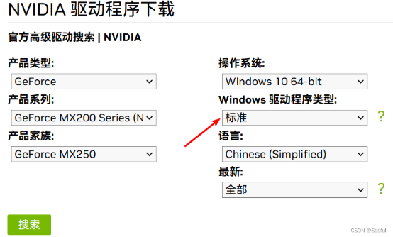 -
点击搜索，下面就会列出一大堆的历史驱动，选择第一个，也就是最新的，当前是472.12，点开再点下载，再点同意并下载 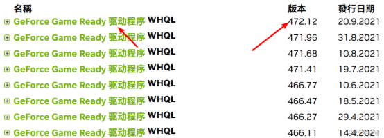
-
下载完毕后，双击安装，会提示选择一个解压缩的目录，建议选一个空闲空间大一点的盘来存放，这个安装完毕后会自动删除的 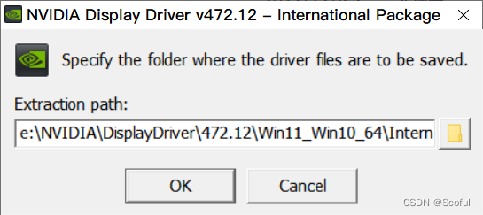
-
等解压缩完毕后，会自动检查系统是否可以安装这个驱动，等检查完毕后，选择NVIDA图形驱动程序，上面的NVIDIA显卡驱动和GeForce Experience，会多安装GeForce Experience，给可怜的C盘更多的负担，不建议选择 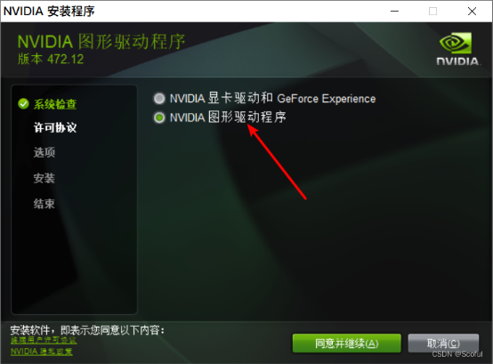
-
同意并继续后，选择精简，下一步 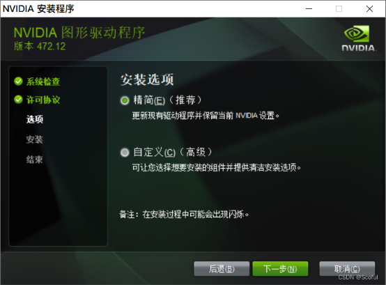
-
等待安装完成，关闭就行了，建议重启电脑一下 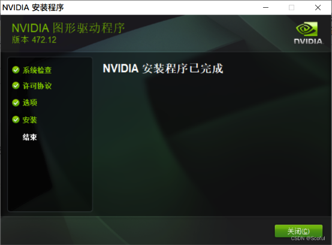
-
右键点击桌面空白处，选择NVIDIA 控制面板，打开后，点击左下角的系统信息，查看驱动程序版本是否是安装的472.12 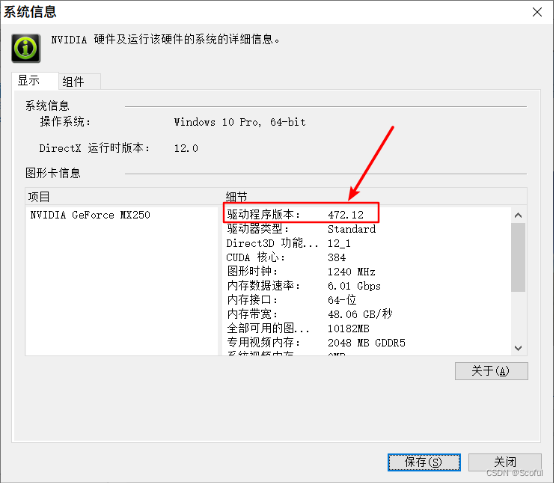
安装CUDA#
打开cmd，输入命令：nvidia-smi，会列出当前的驱动版本和支持的CUDA的最高版本，如果提示命令不存在，建议用软件everything，搜索nvidia-smi.exe，然后自行把目录添加到环境变量里，或者直接进入nvidia-smi.exe的目录里再运行命令
检查显卡驱动兼容性：命令行输入 nvidia-smi，确认 CUDA 版本
nvidia-smi #查看驱动版本，最高支持13.0，可以向下兼容
+-----------------------------------------------------------------------------------------+
| NVIDIA-SMI 581.57 Driver Version: 581.57 CUDA Version: 13.0 |
+-----------------------------------------+------------------------+----------------------+- 右上角显示的13.0就是当前电脑能够支持CUDA的最高版本，可以向下兼容，去CUDA的官方地址下载，选择低于可支持版本的，比如我选择了CUDA Toolkit 11.8.0
- 下载完毕后，双击安装，会提示选择一个解压缩的目录，建议选一个空闲空间大一点的盘来存放，这个安装完毕后会自动删除的 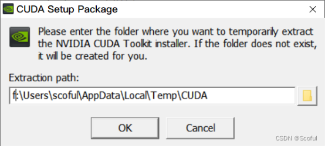
- 等解压缩完毕后，会自动检查系统是否可以安装这个驱动，等检查完毕后，同意并继续
- 选自定义，下一步 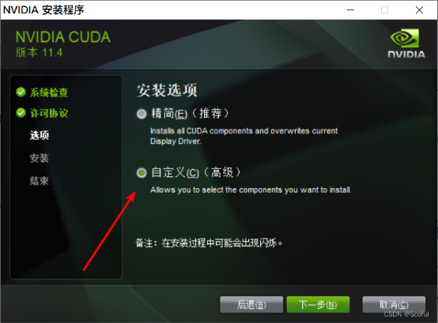
- 点开CUDA，找到Visual Studio Integration，取消勾选，如图所示 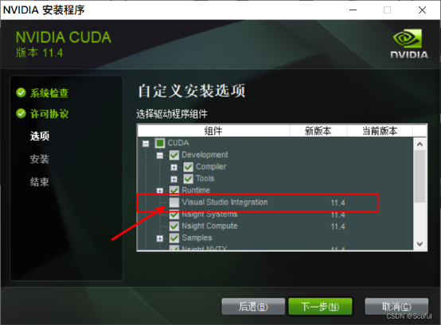
- 跟CUDA同级别的也都取消勾选，如图所示，下一步
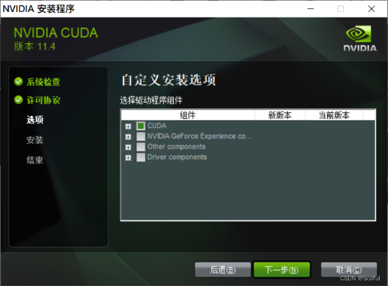 - 等待安装完成，下一步，关闭就行了，建议重启电脑一下 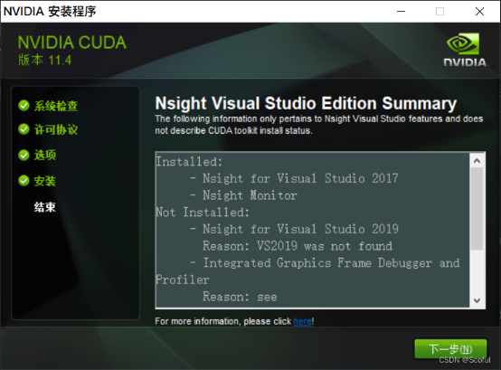
- 打开cmd，输入命令：nvcc -V ，能正常输出版本信息等，就说明安装成功了

- (可选)，做一下GPU带宽测试，用软件everything，搜bandwidthTest.exe，找到文件所在地址，然后打开cmd，输入命令：bandwidthTest.exe，看到结果有输出pass，说明测试成功

- (可选)，获取CUDA可使用的GPU的信息，用软件everything，搜deviceQuery.exe，找到文件所在地址，然后打开cmd，输入命令：deviceQuery.exe，看到结果有输出pass，说明测试成功，根据结果也可知，集显是不能被CUDA操控的。

安装cuDNN#
-
先注册一个NVIDIA的开发者账号，打开地址，根据提示验证并注册
-
点开后，找到Windows的，点开，下载
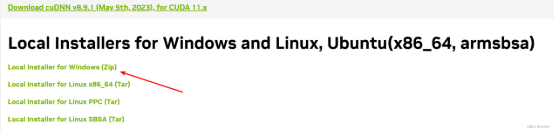 -
cuDNN其实称不上安装，只需要将下载下来的压缩包解压后，将对应文件夹的文件放到CUDA安装路径下的对应文件夹里即可(cuDNN可以认为是CUDA的补充，可以加速深层神经网络的速度) 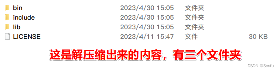
-
复制上图的三个文件夹里面文件，然后找到CUDA的安装文件夹，也是一样有bin、include、lib，分别复制到里面即可，如果找不到，用软件everything，搜CUDA_Toolkit_Release_Notes.txt或者nvcc.exe，
安装pytorch#
https://pytorch.org/get-started/previous-versions/
#创建名字yolov10环境，指定python版本3.9
conda create -n yolov10 python=3.9 -y
#激活yolov10环境
conda activate yolov10
#安装PyTorch
pip install torch==2.0.1 torchvision==0.15.2 --index-url https://download.pytorch.org/whl/cu118
#如果没有显卡，可以安装CPU版本
pip install torch torchvision torchaudio同一个 PyTorch 版本有两种安装方式 pip：一般pip安装会比conda安装较高效 conda：需要安装Anaconda 或 Miniconda
安装yolo#
1.三种安装方式 1）直接使用源码(不推荐，无法使用命令行工具) https://github.com/ultralytics/ultralytics 2）pip直接安装(官方推荐) pip install ultralytics 3）pip源码安装(个人推荐) 我是采用此方法
#激活yolov10环境
conda activate yolov10
#进入项目目录
cd D:\PyProject\yolov10-main
#!!!打开requirements.txt，把torch和torchvision注释掉,防止安装的不匹配.#如果不小心安装了torch,先卸载所有torch相关包，再重新安装
pip uninstally torch torchvision torchaudio torchtext
#安装依赖
pip install -r requirements.txt
#安装项目 -e参数必须要有，否则后续修改代码无效
pip install -e .
#可以看到已经安装了ultralytics ，并且源码在D:\PyProject\ultralytics-8.2.0目录下
pip list
ultralytics 8.1.34 D:\PyProject\yolov10-main #源码方式安装
#验证安装
python -c "from ultralytics import YOLOv10;print('成功导入YOLOv10!')"
#验证cuda
import torch
print(f"CUDA available:{torch.cuda.is available()}")#状态正常返回True
(D:\conda_envs\yolov10) C:\Users\wchuang> python
Python 3.9.25 (main, Nov 3 2025, 22:44:01) [MSC v.1929 64 bit (AMD64)] on win32
Type "help", "copyright", "credits" or "license" for more information.
>>> import torch
>>> print(torch.__version__)
2.0.1+cu118
>>> torch.cuda.is_available()
True
>>> torch.version.cuda
'11.8'
#验证CuDNN
>>> torch.backends.cudnn.version()
8700 #输出cudnn版本号
>>> torch.backends.cudnn.enabled
True #是否启用
//常见问题
NVIDIA-SMI有显示但torch.cuda.is_available()返回 False:
//重新安装 PyTorch 匹配 CUDA 版本
pip uninstall torch torchvision
(D:\conda_envs\yolov10) D:\PyProject\yolov10-main>yolo predict model=yolov10n.pt source=ultralytics/assets/bus.jpg
Ultralytics YOLOv8.1.34 🚀 Python-3.9.25 torch-2.0.1+cu118 CUDA:0 (NVIDIA GeForce MX250, 2048MiB)
YOLOv10n summary (fused): 285 layers, 2762608 parameters, 63840 gradients, 8.6 GFLOPs
image 1/1 D:\PyProject\yolov10-main\ultralytics\assets\bus.jpg: 640x480 4 0s, 1 5, 55.8ms
Speed: 5.3ms preprocess, 55.8ms inference, 5.0ms postprocess per image at shape (1, 3, 640, 480)
Results saved to runs\detect\predict #预测结果输出在 runs/detect/predict 文件夹
💡 Learn more at https://docs.ultralytics.com/modes/predictpycharm#
pycharm打开项目D:\PyProject\yolov10-main
from ultralytics import YOLOv10
yolo = YOLO("yolov10n.pt")
# result = yolo(source="./test.mp4") #逐帧视频检测
# result = yolo(source="screen") #屏幕检测
# result = yolo(source="0") #摄像头检测
result = yolo(source="./ultralytics/assets/bus.jpg",save=True,conf=0.3) #图片检测
print(result)
sava参数：保存结果到runs目录下
conf参数：置信度阈值
取值范围： 0.0 ~ 1.0| conf | 含义 | 结果 |
|---|---|---|
| 0.05 | “模型只要稍微觉得像，我就信” | 检测多，误检也多 |
| 0.25 | “模型要比较确定我才信” | 默认设置，平衡准确率 |
| 0.5 | “模型要很确定我才信” | 检测少，误检少 |
| 1.0 | “模型必须百分百确定我才信” | 几乎检测不到任何目标 |